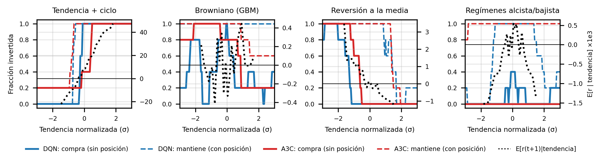

| Entorno | Sin modificar: estado (tendencia de 6 precios, posición), vender/mantener/comprar, recompensa = rendimiento invertido − 0.1% por operación. Simulador vectorizado verificado idéntico al entorno. |
| Entrada a la red | Tendencia/σ y posición, sin discretizar; σ solo de series de entrenamiento (0.025 en GBM, 0.15 en ciclo). Sin escalar, la tendencia varía ~40 veces menos que la posición y la red apenas la distingue. Es biyectiva: no cambia el MDP. |
| Último paso; ×100 | El entorno lo marca terminated; decidimos tratarlo como límite de tiempo (bootstrap): la serie no acaba por nada observable y el estado no contiene t. Sin bootstrap, DQN: no concluyente en 3 mercados, equivalente en 1 mercado (Tabla 6). Recompensa ×100: Q en O(1), mismo argmax. |
| DQN | Red 2-64-64-3; replay 50k (transiciones consecutivas correlacionadas); red objetivo (target fijo durante C pasos); Double (max sobre Q ruidosas sobreestima «estar dentro»); Huber y recorte de gradiente; εk=max(0.02, λεk) por episodio. |
| A3C | Real: 4 procesos asíncronos (Hogwild, Adam compartido), red actor/crítico de dos cabezas como la del profesor, ventaja a n pasos y entropía β. On-policy, sin replay: decorrelan los workers, cada uno en series distintas. |
| Referencias | Aleatorio, B&H, siempre fuera, momentum/contraria, oráculo miope* (invierte si E[rt+1|tendencia]>0), Q-learning tabular, mejor regla de umbrales (búsqueda exhaustiva de 1–4 umbrales en entrenamiento) y oráculo oculto (conoce fase, equilibrio o régimen: techo). |
| Protocolo | Semillas disjuntas: entrenamiento (serie nueva por episodio), validación (40 series: ajuste y parada temprana), test (100 series comunes: pareado). Ajuste aleatorio (12/10/12 config. DQN/A3C/Q-learning; Tabla 2), 5 semillas nuevas. El test no elige nada. |
| Métricas | Σr = recompensa total, lo que optimiza el agente (principal); log-riqueza (del balance) y cociente de capital exp(Δ log-riqueza), lo que le importa al inversor: Σr suma rendimientos aritméticos («G sube pero el PnL no»). |
| Estadística | Regla única para los 252 contrastes: Wilcoxon pareado sobre 100 series con la media de las semillas en cada serie (inferencia sobre estos modelos) + IC95% bootstrap jerárquico (remuestrea semillas y series: añade la variabilidad entre entrenamientos). Gana/pierde: p ajustada <0.05 y el IC excluye el 0; equivalente: IC90% dentro de ±δ (TOST); si no, no concluyente. δ = 0.02 de Σr (0.12 en el ciclo, 2% del B&H). Confirmatoria: los mínimos (20, Holm); exploratoria: el resto (232, Benjamini-Hochberg). Friedman-Nemenyi y potencia. |
Tabla 1. Decisiones de diseño y su justificación. vol./MA = volatilidad de 20 días y P/MA30−1; ventana = 10 últimos log-rendimientos (causales, verificado).
¿Qué se puede aprender? E[rt+1|decil de tendencia] en 400 series de entrenamiento: ciclo, momentum (-20‰ a +45‰); GBM, nada (|E| ≤ 0.25‰ < comisión de 1‰); reversión, contraria (+2.6‰ a -1.2‰); regímenes, U invertida (+0.35‰ en el centro, -1.6‰ en el extremo: la tendencia extrema delata el régimen bajista). Es la estrategia esperada (Fig. 1).
| Hiperparámetros | Tendencia+ciclo | Browniano (GBM) | Reversión media | Regímenes |
|---|---|---|---|---|
| DQN (400 ep) | α=0.0003, γ=0.5, λε=0.95, C=1000 | α=0.001, γ=0.9, λε=0.99, C=1000 | α=0.001, γ=0.5, λε=0.95, C=250 | α=0.0003, γ=0.5, λε=0.98, C=1000 |
| A3C (1200 ep, 4 w) | α=0.0003, γ=0.5, β=0.001, n=20 | α=0.0003, γ=0.99, β=0.05, n=5 | α=0.0001, γ=0.99, β=0.05, n=20 | α=0.0001, γ=0.5, β=0.001, n=20 |
| Q-learn. (2000 ep) | α0=0.05, γ=0.9, λε=0.99, bins=10 | α0=0.1, γ=0.9, λε=0.995, bins=16 | α0=0.05, γ=0.99, λε=0.995, bins=16 | α0=0.05, γ=0.99, λε=0.995, bins=16 |
Tabla 2. Hiperparámetros elegidos en validación. γ=0.5 gana en 5 de 8 casos DQN/A3C: la señal predice el paso siguiente y un horizonte corto reduce la varianza del target.
| Agente | Tendencia+ciclo | Browniano (GBM) | Reversión media | Regímenes | ||||||||
|---|---|---|---|---|---|---|---|---|---|---|---|---|
| Ret.med % | Σr | >B&H % | Ret.med % | Σr | >B&H % | Ret.med % | Σr | >B&H % | Ret.med % | Σr | >B&H % | |
| Aleatorio | +984.2 | +2.861 | 6 | -13.3 | -0.155 | 31 | -13.5 | -0.113 | 0 | -19.3 | -0.222 | 33 |
| Buy & Hold | 3,634 | +6.014 | 0 | -0.8 | +0.014 | 0 | -0.4 | +0.105 | 0 | -12.5 | -0.110 | 0 |
| Siempre fuera | +0.0 | +0.000 | 10 | +0.0 | +0.000 | 51 | +0.0 | +0.000 | 53 | +0.0 | +0.000 | 71 |
| Momentum | 39,653 | +7.505 | 94 | -20.7 | -0.119 | 35 | -27.9 | -0.269 | 7 | -20.5 | -0.154 | 48 |
| Contraria | -95.0 | -1.675 | 0 | -14.7 | -0.104 | 47 | +8.6 | +0.122 | 62 | -18.3 | -0.190 | 49 |
| Oráculo miope* | 29,233 | +7.773 | 97 | -25.3 | -0.251 | 27 | +3.9 | +0.100 | 56 | -19.6 | -0.160 | 48 |
| Q-learning | 37,656 | +7.989±0.16 | 99 | -8.0 | -0.043±0.03 | 46 | +27.0 | +0.271±0.04 | 95 | +4.5 | +0.077±0.00 | 79 |
| DQN | 29,311 | +7.902±0.06 | 99 | -0.4 | +0.013±0.00 | 43 | +24.3 | +0.282±0.02 | 96 | -0.5 | +0.040±0.02 | 81 |
| A3C | 33,255 | +7.638±0.91 | 99 | -4.1 | -0.006±0.03 | 47 | +14.7 | +0.224±0.02 | 84 | +0.0 | +0.000±0.00 | 71 |
Tabla 3. Ret.med = rendimiento final mediano; Σr = recompensa total media (±sd entre semillas); >B&H = % de series cuya riqueza final supera a B&H. Negrita: mejor Σr.
| Convergencia | Tendencia+ciclo | Browniano (GBM) | Reversión media | Regímenes |
|---|---|---|---|---|
| Q-learning | 880 ep ≈ 21 s / 47 s | 265 ep ≈ 3 s / 24 s | 1250 ep ≈ 15 s / 24 s | 885 ep ≈ 11 s / 25 s |
| DQN | 188 ep ≈ 95 s / 203 s | 128 ep ≈ 55 s / 173 s | 236 ep ≈ 102 s / 172 s | 106 ep ≈ 42 s / 159 s |
| A3C | 224 ep ≈ 7 s / 37 s | 40 ep ≈ 2 s / 55 s | 920 ep ≈ 13 s / 17 s | 80 ep ≈ 1 s / 17 s |
Tabla 4. Episodios hasta el 90% de la mejora en validación (media de 5 semillas) ≈ segundos hasta ese punto / tiempo total, sin carga y en serie (1 semilla). Un episodio de DQN cuesta ≈31 de Q-learning, pero converge en 106–236 episodios frente a 265–1250; en segundos gana A3C. DQN y Q-learning son deterministas; A3C no.

Figura 1. Política greedy aprendida (fracción de semillas invertidas; continua: compra sin posición; discontinua: mantiene con posición) frente a E[rt+1|tendencia] (punteada).
| A frente a B (Δ = Σr de A − Σr de B) | Tendencia+ciclo | Browniano (GBM) | Reversión media | Regímenes |
|---|---|---|---|---|
| DQN vs AleatorioC | ▲ +5.04 | ▲ +0.168 | ▲ +0.395 | ▲ +0.262 |
| A3C vs AleatorioC | ▲ +4.78 | ▲ +0.149 | ▲ +0.337 | ▲ +0.222 |
| DQN vs Buy & HoldC | ▲ +1.89 | = -0.001 | ▲ +0.178 | ▲ +0.150 |
| A3C vs Buy & HoldC | ▲ +1.62 | · -0.021 | ▲ +0.119 | · +0.110 |
| DQN vs Q-learningC | · -0.09 | ▲ +0.056 | · +0.011 | ▼ -0.037 |
| A3C vs DQN | · -0.26 | · -0.019 | ▼ -0.058 | · -0.040 |
| Q-learning vs Buy & Hold | ▲ +1.97 | ▼ -0.057 | ▲ +0.166 | ▲ +0.187 |
| DQN vs Mejor regla | ▼ -0.22 | · +0.007 | · +0.005 | · +0.024 |
| PPO vs Mejor regla | = -0.04 | · -0.001 | · +0.012 | · -0.016 |
| PPO+ventana+vol./MA vs Mejor regla | ▲ +0.57 | · +0.007 | ▲ +0.171 | ▲ +0.126 |
| DQN vs Oráculo oculto | ▼ -3.21 | = -0.001 | ▼ -0.375 | ▼ -0.184 |
| % del margen hasta el oráculo oculto capturado: DQN → PPO+ventana+vol./MA | 37% → 52% | sin margen | 32% → 62% | 18% → 63% |
Tabla 5. Veredicto con la regla única (Tabla 1): ▲ gana, ▼ pierde, = equivalente (TOST), · no concluyente; el número es Δ Σr. C = familia confirmatoria (Holm); resto, Benjamini-Hochberg. RL: 5 semillas (PPO+ventana+vol./MA: 3).
| Qué probamos (A vs B; semillas) | Tendencia+ciclo | Browniano (GBM) | Reversión media | Regímenes |
|---|---|---|---|---|
| Mejoró (gana en algún mercado y no pierde en ninguno) | ||||
| Double DQN vs solo red objetivo (modelo final) (2) | ▲ +0.11 | · -0.052 | · +0.056 | · -0.012 |
| Más episodios (ciclo: PPO ×2; reversión: A3C ×2.5; regímenes: DQN ×2.5) (5) | = +0.05 | – | ▲ +0.054 | · +0.020 |
| Parada temprana por validación vs modelo final (DQN) (5) | · -0.08 | · +0.029 | ▲ +0.076 | ▲ +0.055 |
| Parada temprana por validación vs modelo final (A3C) (5) | · -0.06 | ▲ +0.089 | · -0.018 | = +0.000 |
| Ensemble de las 5 semillas vs cada semilla (A3C) (1 vs 5) | · +0.35 | ▲ +0.027 | · +0.006 | = +0.000 |
| PPO (GAE + objetivo recortado) vs DQN (5) | ▲ +0.18 | · -0.008 | · +0.007 | · -0.040 |
| Estado + vol./MA vs estado base (A3C) (3) | · +0.77 | · -0.010 | ▲ +0.208 | = +0.000 |
| Estado + vol./MA vs estado base (PPO) (3) | · -0.03 | · -0.006 | ▲ +0.157 | ▲ +0.118 |
| Estado + ventana + vol./MA vs base (PPO) (3) | ▲ +0.60 | = +0.002 | ▲ +0.161 | ▲ +0.141 |
| Recompensa r−λr², λ=2 (en log-riqueza) (3) | ▲ +0.17 | = -0.001 | · -0.005 | ▲ +0.065 |
| Depende del mercado (gana en unos y pierde en otros) | ||||
| Estado + vol./MA vs estado base (DQN) (5) | ▲ +0.22 | ▼ -0.058 | ▲ +0.095 | ▲ +0.069 |
| Estado + ventana de 10 rendimientos vs base (DQN) (5) | ▲ +0.28 | ▼ -0.108 | ▼ -0.194 | · +0.008 |
| Un DQN para los 4 mercados (+vol./MA) vs especializado (5) | · -0.30 | · +0.002 | ▲ +0.118 | ▼ -0.095 |
| Recompensa r−λr², λ=10 (en log-riqueza) (3) | ▼ -5.52 | = +0.000 | · -0.007 | ▲ +0.047 |
| Sin cambio demostrable (equivalente o no concluyente) | ||||
| Quitar la red objetivo (vanilla vs Double, modelo final) (2) | · -0.04 | · +0.033 | · -0.059 | · +0.001 |
| Dueling DQN vs DQN (5) | = -0.03 | · -0.006 | · +0.012 | · +0.009 |
| Último paso terminal, sin bootstrap (DQN) (3 vs 5) | = -0.02 | · -0.016 | · -0.008 | · -0.002 |
| DQN con γ=0 vs γ=0.5 (2) | · -0.03 | = +0.001 | · +0.009 | · -0.033 |
| DQN con γ=0.99 vs γ=0.5 (2) | · -0.08 | = -0.008 | · -0.008 | · -0.007 |
| Ensemble de las 5 semillas vs cada semilla (DQN) (1 vs 5) | = +0.04 | = -0.001 | · -0.026 | · -0.040 |
| Recompensa log(Bt/Bt−1) (en log-riqueza) (3) | · +0.05 | · +0.001 | · +0.017 | · +0.014 |
| Empeoró (pierde en algún mercado y no gana en ninguno) | ||||
| DQN con γ=0.9 vs γ=0.5 (2) | ▼ -0.13 | = +0.000 | · +0.002 | · -0.082 |
| Expected SARSA (on-policy) vs Q-learning, misma tabla (3) | · +0.00 | – | – | ▼ -0.076 |
| Robustez a la comisión (DQN y regla re-entrenados con otra comisión) | ||||
| Comisión 0%: DQN vs regla re-ajustada (3 vs regla) | ▼ -0.23 | – | · -0.018 | · -0.036 |
| Comisión 0.5%: DQN vs regla re-ajustada (3 vs regla) | · -0.04 | – | · -0.032 | ▲ +0.103 |
Tabla 6. Cada experimento (A) frente a lo que sustituye (B), con la misma regla (Δ Σr; log-riqueza en las filas de recompensa); entre paréntesis, semillas: con 2–3, ▲ y = son indicios (el IC jerárquico estima mal la variabilidad entre entrenamientos). Parada temprana, ensemble, oráculo oculto y cociente de capital son ideas de otros trabajos, recalculadas con nuestro protocolo.
(1) DQN redescubre la estrategia esperada en los 4 mercados, con la histéresis que impone la comisión; A3C, en ciclo y reversión (en regímenes se queda fuera). Ambos baten al aleatorio y a B&H donde hay señal. En GBM, DQN converge a B&H (1 operación), mientras A3C (18) y Q-learning (47) operan ruido. (2) Con la observación del enunciado no superan a la mejor regla de dos umbrales (DQN pierde en el ciclo, PPO es equivalente) salvo en regímenes, donde la regla sobreajusta, y quedan lejos del oráculo oculto: el límite es la observación; con volatilidad y media móvil el RL profundo supera a la regla y la red aventaja a la tabla. (3) Con señal débil (regímenes) los métodos on-policy colapsan a «siempre fuera»; Q-learning y DQN no. (4) La metodología cambia las conclusiones: parada temprana, semillas, test pareado, corrección múltiple y TOST convierten «DQN empata con Q-learning» en «no concluyente con 5 semillas». Limitaciones: datos sintéticos estacionarios; comisión sin deslizamiento; búsqueda de hiperparámetros limitada; las variantes de las Tablas 5–6 heredan los hiperparámetros del estado base y usan 2–5 semillas (poca potencia para efectos pequeños); el S&P 500 es una sola serie. Descartados por coste/beneficio: REINFORCE y A2C síncrono (PPO y A3C los cubren), MSE frente a Huber, más mercados sintéticos y otros activos reales.